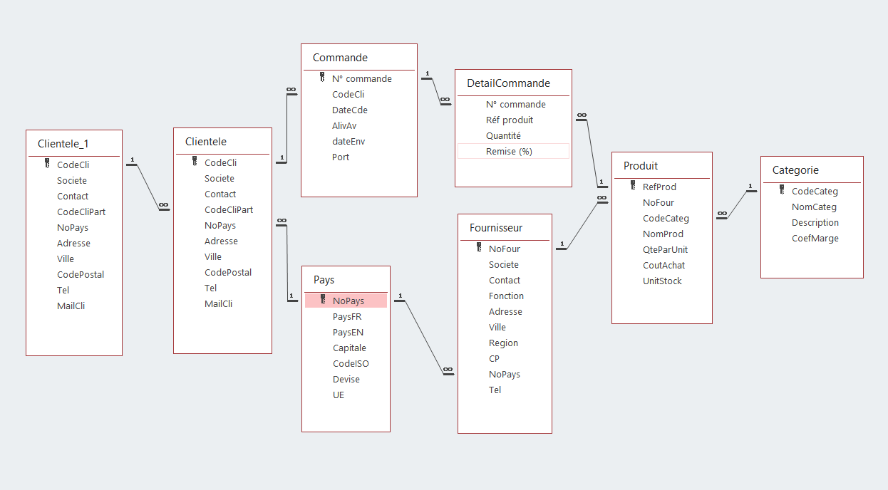
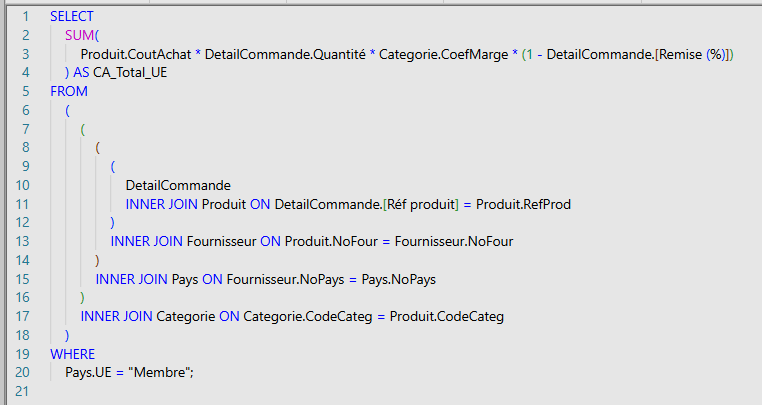
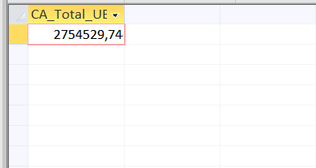
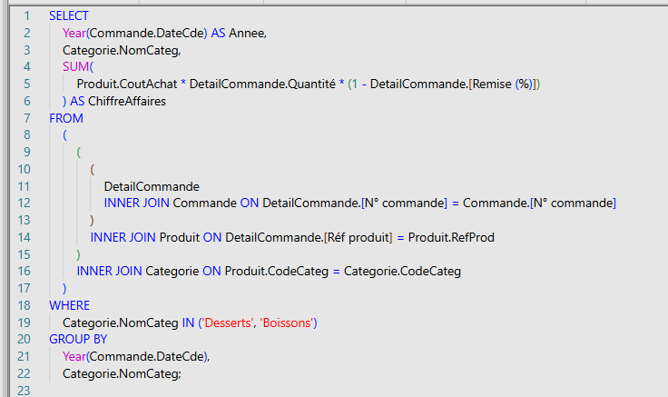
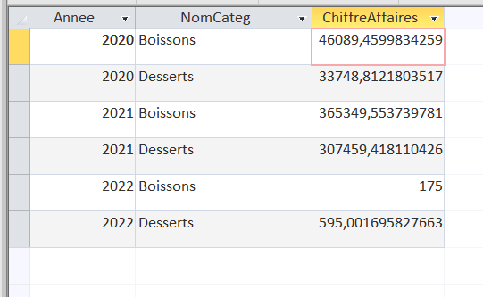
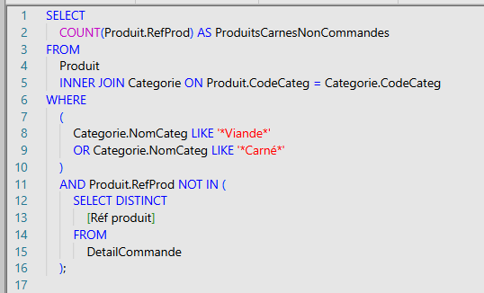
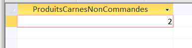
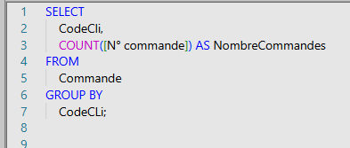
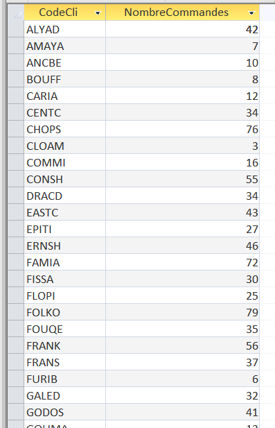

Base de données:

Étape 1: Requêtes SQL
D'après l'objectif de Kdou Business de transmettre une image plus "eco-friendly" nous avons commencé par analyser sa base de données à partir des requêtes SQL dans le but de comprendre le fonctionnement de l'entreprise et de lui proposer des stratégies possibles qu'elle pourrait implémenter. Voici les aspects sur lesquels nous avons travaillé:
- Origine des produits
- Chiffre d'affaire par catégorie de produit
- Nombre de produits offerte non commandés
- Fonctionnement des livraisons
Étape 2: Analyses de résultats
- Origine des produits:
Pour traiter cet aspect nous avons produit des requêtes pour les questions suivantes:
Quel est le CA total généré à ce jour avec les fournisseurs de l’UE ?
Requête :

Résultat :

Quel est le CA total généré à ce jour avec les fornisseurs en dehors de l'UE ?
- Chiffre d'affaire par catégorie de produit:
Pour traiter cet aspect nous avons produit des requêtes pour les questions suivantes:
Quel est le chiffre d'affaire par an généré pour les catégories desserts ou boissons ?
Requête :

Résultat :

- Nombre de produits offerte non commandés
Pour traiter cet aspect nous avons produit des requêtes pour les questions suivantes:
Quel est le nombre des produits carnés non commandés actuellement ?
Requête :

Résultat :

- Fonctionnemment des livraisons :
Pour traiter cet aspect nous avons produit des requêtes pour les questions suivantes:
Il y a des clients pilotes d'un réseau partenaire ayant autant de commandes que des clients partenaires ?
Requête :

Résultat :
